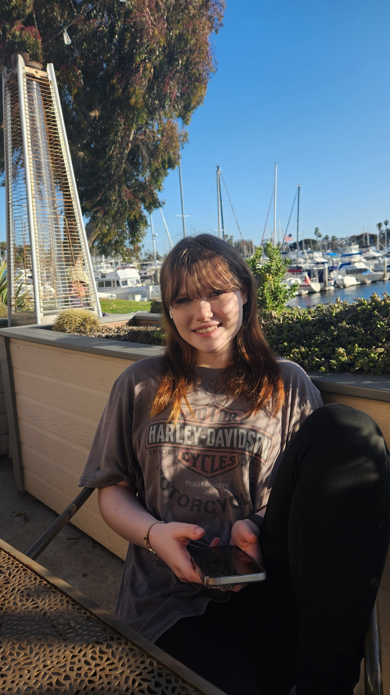

Hello! I'm Ava, I am a sketch artist and acrylic painter. I have always been intrested in art ever since I was little. Around age 9, I started to view art as a hobby. From then on, I have been drawing and painting whenever I have free time. For the most part I see art as a way to express myself, whether it be how i feel or my favorite things. In my younger years I focused on a more cartoon like style, and stuck to the basics of drawing. But as I get older, I have been focusing on improvement. This can be with my works that are more realistic, or just me focusing more on form and shading.
